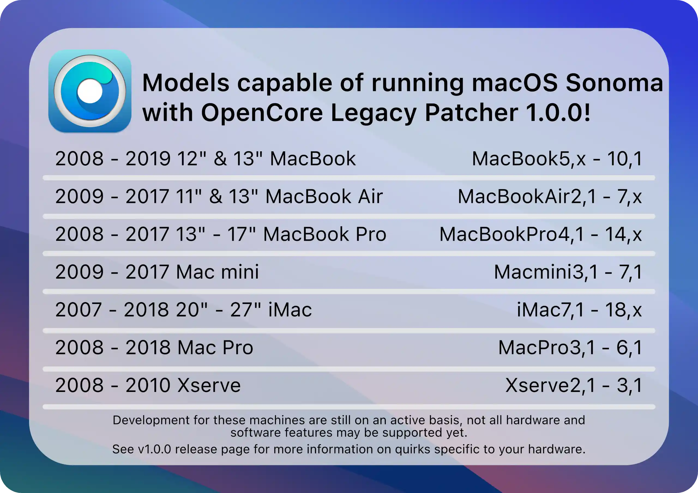
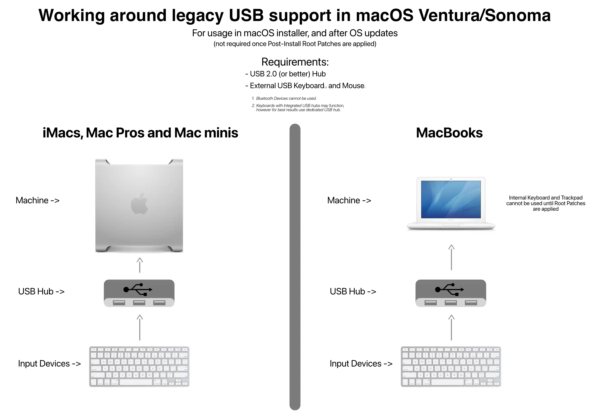
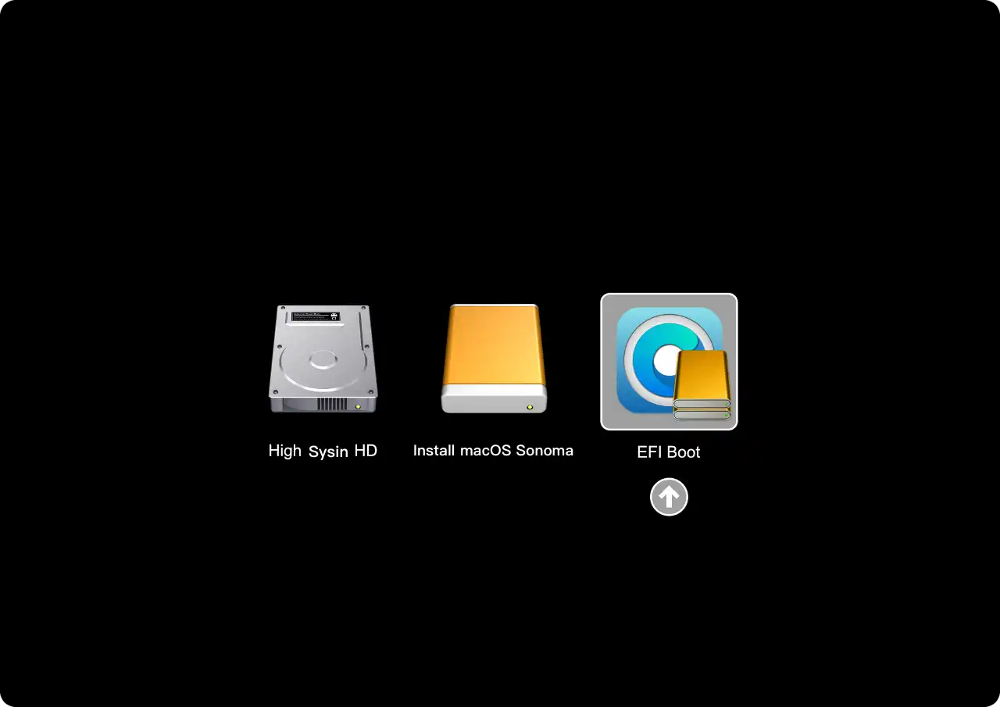
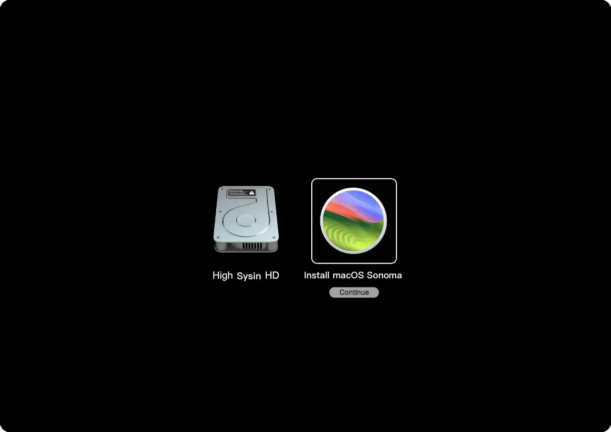

请访问原文链接：在不受支持的 Mac 上安装 macOS (索引页面) 查看最新版。原创作品，转载请保留出处。
作者主页：sysin.org
历时两个月，OpenCore Legacy Patcher v1.5.0 发布，终于和 macOS Sonoma 14.5 版本号对应，更新 Sonoma 正当时！
- 新的特权帮助工具。
- 删除了安装补丁、创建安装程序等时的密码提示要求。
- 新的基于包的分发。
- 帮助支持新的帮助工具安装，并简化未来的更新。
- OpenCore-Patcher.pkg 将是安装 OpenCore Legacy Patcher 的推荐方法。
随着 OpenCore Legacy Patcher v1.4.3 的发布，此版本主要针对 macOS 14.4/14.4.1 和配备非 Metal 显卡的 Mac。 此版本解决了对以下具有非 Metal GPU 的机器的支持：
- MacBook5,1 - MacBook7,1 (Early 2008 - Mid 2010)
- MacBookAir2,1 - MacBookAir4,x (Mid 2008 - Mid 2011)
- MacBookPro4,1 - MacBookPro8,x (Late 2008 - Late 2011)
- iMac7,1 - iMac12,x (Mid 2007 - Mid 2011)
- Macmini3,1 - Macmini5,x (Early 2009 - Mid 2011)
- MacPro3,1 - MacPro5,1 (Early 2008 - Mid 2012)
受影响的 GPU 型号：
| Vendor | Architecture | Generation |
|---|---|---|
| AMD | TeraScale 1 and 2 | 2000 - 6000 series |
| Nvidia | Tesla | 8000 - 200 series |
| Nvidia | Maxwell and Pascal | 900 - 1000 series |
| Intel | Iron Lake | HD series |
| Intel | Sandy Bridge | HD 3000 series |
OpenCore Legacy Patcher 1.4.2 changelog：
- 解决 macOS 14.4 上对 Modern Wireless 的自动加入支持问题：适用于 BCM94360、4360、4350、4331 和 43224 芯片组
- 解决 macOS 12.7.4 和 13.6.5 上旧版无线的 WiFi 支持问题：适用于 BCM94328、BCM94322 和 Atheros 芯片组
- 解决 macOS Ventura 上从 OCLP 1.4.0 开始重现的 USB 1.1 问题
- 增量二进制文件：PatcherSupportPkg 1.4.8 - 发布
八小时后 OpenCore Legacy Patcher v1.4.1 发布，更新了个别 Mac 的支持，应使用此版本。
随着 OpenCore Legacy Patcher v1.4.0 的发布，此版本主要针对 macOS 14.4 和所有 Mac，以确保功能正常。
警告 1：如果您拥有非 Metal Mac，请勿升级到 macOS 14.4：
配备非 Metal 显卡的 Mac 目前不支持 macOS 14.4，请参阅 macOS 14.4 non-Metal sessions bug #1125了解更多信息。受影响的 Mac：
-
MacBook5,1 - MacBook7,1（2008 年初 - 2010 年中）
-
MacBookAir2,1 - MacBookAir4,x（2008 年中 - 2011 年中）
-
MacBookPro4,1 - MacBookPro8,x（2008 年末 - 2011 年末）
-
iMac7,1 - iMac12,x（2007 年中 - 2011 年中）
-
Macmini3,1 - Macmini5,x（2009 年初 - 2011 年中）
-
MacPro3,1 - MacPro5,1（2008 年初 - 2012 年中）
受影响的 GPU 型号
| Vendor | Architecture | Generation |
|---|---|---|
| AMD | TeraScale 1 and 2 | 2000 - 6000 series |
| Nvidia | Tesla | 8000 - 200 series |
| Nvidia | Maxwell and Pascal | 900 - 1000 series |
| Intel | Iron Lake | HD series |
| Intel | Sandy Bridge | HD 3000 series |
警告 2：如果升级到 macOS 14.4，您 必须 事先安装 OCLP 1.4.0：
许多硬件，包括 Metal GPU、WiFi 卡、T1 芯片组等都有针对 macOS 14.4 的新补丁。我们强烈建议您提前安装 OCLP 1.4.0 以确保顺利更新。
警告 3：升级到 14.4 可能会破坏自动加入 WiFi 网络：
要恢复自动加入支持，请忽略网络并重新添加。
OpenCore Legacy Patcher v1.3.0 现已发布，此版本主要针对 macOS 14.2 和配备基于 Metal 3802 显卡的 Mac。
⚠️ 警告：在以下电脑上升级到 macOS 14.2 之前，您必须安装此更新：
- MacBook Air
- MacBookAir5,x（2012 年中）
- MacBookAir6,x（2013 年中、2014 年初）
- MacBook Pro
- MacBookPro9,x（2012 年中）
- MacBookPro10,x（2012 年中、2012 年末、2013 年初）
- MacBookPro11,x（2013 年末、2014 年中）
- Mac mini
- Macmini6,x（2012 年末）
- Macmini7,1（2014 年末）
- iMac
- iMac13,x（2012 年末）
- iMac14,x（2013 年末、2014 年中）
受影响的显卡系列（所有基于 3802 的 Metal GPU）：
- Intel iGPUs
- Ivy Bridge
- Haswell
- Nvidia dGPUs
- Nvidia Kepler
v1.2.1 是 OpenCore Legacy Patcher 的启动代理在 macOS 更新后无法加载的错误修复版本。此更新并不重要，但有助于简化最终用户的更新流程。
OpenCore Legacy Patcher v1.2.0 现已发布，一些重要的改进如下：
- 解决 2017 4k iMac 上的 4k 输出渲染问题。
- 适用于 iMac18,2。
- 解决提取的框架和二进制文件上的 LLDB 崩溃问题。
- 更好地处理 T1 安全芯片。
- 适用于基于 TouchBar 的 2016 款和 2017 款 MacBook Pro。
- 如果您发现 TouchBar 在 Sonoma 中不起作用，您可能需要启动 Ventura 来重新安装 T1 的固件。
完整更新日志详见项目主页。
OpenCore Legacy Patcher v1.1.0 现已发布，Touch ID 功能恢复了，并且支持 macOS Sonoma 14.1。
| Model | Name |
|---|---|
| MacBookPro13,2 | MacBook Pro (13-inch, 2016, Four Thunderbolt 3 Ports) |
| MacBookPro13,3 | MacBook Pro (15-inch, 2016) |
| MacBookPro14,2 | MacBook Pro (13-inch, 2017, Four Thunderbolt 3 Ports) |
| MacBookPro14,3 | MacBook Pro (15-inch, 2017) |
- T1 安全芯片支持 macOS Sonoma！
- 恢复 Touch ID 身份验证
- 适用于 2016 年和 2017 年 TouchBar MacBook Pro
-
- MacBookPro13,2、MacBookPro13,3、MacBookPro14,2、MacBookPro14,3
- macOS 14.1 的改进：
- 解决了 PCIe FaceTime 摄像头支持问题
- 解决了 USB 1.1 支持问题
macOS Sonoma 正式版已发布，OpenCore Legacy Patcher v1.0.0 版本已支持。
随着 OpenCore Legacy Patcher 1.0.0 的发布，OLP 项目组非常自豪地宣布支持 macOS Sonoma！有了它，83 种不受支持的 Mac 型号将能够运行 Apple 的最新操作系统！

借助 macOS Sonoma，项目组花了数月的时间不知疲倦地工作，以使这些旧机器运行。由于支持的不同硬件数量众多，并且在闭源操作系统上工作的挑战，目前并非所有功能都可用。
Sonoma 的主要限制：
- 缺乏对 T1 安全芯片的硬件支持
- macOS Sonoma 和 T1 安全芯片支持 #1103
- 适用于 2016 年和 2017 年基于 Touch Bar 的 MacBook Pro
随着时间的推移，有可能解决这个问题。但是无法提供解决时间的任何时间表。
此外，建议用户检查图形问题，看看可能不完全支持的内容：
- Legacy Metal Graphics Support and macOS Ventura - Sonoma #1008
- Legacy Non-Metal GPUs and MacOS Big Sur - Sonoma #108
正如预期的那样，macOS Sonoma 支持仍在积极开发中。这是一个社区驱动的项目，因此，我们要求用户控制期望值，并在遇到影响您正常使用的问题时切换到较旧的操作系统。
一、介绍
本文主要面向 macOS Sonoma（不定期更新中），通用于 macOS Ventura、macOS Monterey 和 macOS Big Sur，也可以视为笔者 早期文章 的升级版。
感谢评论区读者的反馈！
这一章节将介绍 macOS Sonoma 的系统要求和不受支持的 Mac 机型但使用 OpenCore Patcher 可以支持的机型，以及 OpenCore Legacy Patcher 的优缺点。
1. macOS Sonoma 简介
macOS Sonoma
被实力吸引，被乐趣圈粉
macOS Sonoma 的强大，让 Mac 工作和娱乐起来都更得心应手。
在视频通话中更上镜，了解信息有新途径，玩起游戏也更带劲。
Mac 还有了更多个性化方式，让你尽情展现自己的风格。
2023 年 9 月 26 日，macOS Sonoma 现已推出。

- macOS Sonoma 让 Mac 体验更上一层楼，带来个性化设置小组件的更多方式、Safari 浏览器和视频会议体验的重大更新，以及进一步优化的游戏体验。
macOS Sonoma 现已通过免费软件更新形式发布，为 Mac 带来一系列丰富新功能，让工作与游戏体验更出色 (sysin)。在 macOS Sonoma 中，桌面小组件解锁了个性化 Mac 与提升效率的全新方式，精美的新屏幕保护程序、视频会议和 Safari 浏览器的重大更新，以及进一步优化的游戏体验，都让 Mac 使用体验更胜以往。
2. macOS Sonoma 硬件要求
看看你的 Mac 是否能用 macOS Sonoma
-
iMac 2019 and later 进一步了解
-
iMac Pro 2017 进一步了解
-
Mac Pro 2019 and later 进一步了解
-
Mac Studio 2022 and later 进一步了解
-
Mac mini 2018 and later 进一步了解
-
MacBook Air 2018 and later 进一步了解
-
MacBook Pro 2018 and later 进一步了解
3. 什么是 OpenCore
这是一个复杂的引导加载程序，用于在内存中注入和修补数据，而不是在磁盘上。这意味着我们能够在许多配备 Metal GPU 且不受支持的 Mac 上获得接近原生的体验。这包括其他修补程序的许多渴望已久的功能，例如：
- 系统完整性保护（SIP）、FileVault 2、.im4m 安全启动和存储
- 所有 Mac 上的原生 OTA OS DELTA 更新
- Recovery OS、安全模式和单用户模式启动
- WPA Wi-Fi 和个人热点支持
虽然 Hackintosh 社区的许多 PC 用户都熟悉 OpenCore，但 OpenCore 被设计为 Mac 和 PC 无关，确保两个平台都可以轻松使用它。借助 OpenCore Legacy Patcher，可以帮助我们自动化流程，让 OpenCore 的运行变得更加容易。
⚠️ 警告：Boot Camp 功能将有限支持，基于传统 MBR 的安装不会显示在 OpenCore 中，同时因 CPU 限制，仅特定机型支持 UEFI Windows 10，请参看：Installing UEFI Windows 10
4. 支持的 macOS 版本
关于操作系统支持，如下：
关于操作系统支持，如下：
| 支持入口 | 描述 | 支持的操作系统 | 备注 |
|---|---|---|---|
| 宿主操作系统 | 指支持运行 OpenCore-Patcher.app 的操作系统 | macOS 10.9 - macOS 14 | 手动安装 Python 3.9 或更高版本 则支持 10.7+，只需运行 repo 中的 OpenCore-Patcher.command。 |
| 目标操作系统 | 指可以修补以与 OpenCore 一起运行的操作系统 | macOS 11 - macOS 14 | 可能支持 10.4 和更新版本（处于潜在损坏状态）。不提供支持。 |
本文目标是在以下不受支持的 Mac 机型上安装 macOS Big Sur、macOS Monterey、macOS Ventura 和 macOS Sonoma。
5. 支持的 Mac 机型
任何支持 SSE4.1 CPU 和 64 位固件的硬件都可以在此修补程序上运行。要检查您的硬件型号，请在终端的适用机器上运行以下命令：
1 | system_profiler SPHardwareDataType | grep 'Model Identifier' |
下表将列出补丁程序当前支持和不支持的所有功能：
MacBook
| Model Name | Identifier | Tagged Issues |
|---|---|---|
| MacBook (13-inch, Late 2008) | MacBook5,1 |
- non-Metal GPU (macOS 11+)↗ - USB 1.1 (macOS 13+)↗ |
| MacBook (13-inch, Early 2009) MacBook (13-inch, Mid 2009) |
MacBook5,2 |
- non-Metal GPU (macOS 11+)↗ - USB 1.1 (macOS 13+)↗ - Trackpad gestures are partially broken |
| MacBook (13-inch, Late 2009) | MacBook6,1 |
- non-Metal GPU (macOS 11+)↗ - USB 1.1 (macOS 13+)↗ |
| MacBook (13-inch, Mid 2010) | MacBook7,1 |
同上 |
| MacBook (Retina, 12-inch, Early 2015) | MacBook8,1 |
- Legacy Metal (macOS 13+)↗ |
| MacBook (Retina, 12-inch, Early 2016) | MacBook9,1 |
同上 |
| MacBook (Retina, 12-inch, 2017) | MacBook10,1 |
- Supported by OpenCore Legacy Patcher |
MacBook Air
| Model Name | Identifier | Tagged Issues |
|---|---|---|
| MacBook Air (13-inch, Late 2008) MacBook Air (13-inch, Mid 2009) |
MacBookAir2,1 |
- non-Metal GPU (macOS 11+)↗ - USB 1.1 (macOS 13+)↗ |
| MacBook Air (11-inch, Late 2010) | MacBookAir3,1 |
同上 |
| MacBook Air (13-inch, Late 2010) | MacBookAir3,2 |
同上 |
| MacBook Air (11-inch, Mid 2011) | MacBookAir4,1 |
同上 |
| MacBook Air (13-inch, Mid 2011) | MacBookAir4,2 |
同上 |
| MacBook Air (11-inch, Mid 2012) | MacBookAir5,1 |
- Legacy Metal (macOS 13+)↗ |
| MacBook Air (13-inch, Mid 2012) | MacBookAir5,2 |
同上 |
| MacBook Air (11-inch, Mid 2013) MacBook Air (11-inch, Early 2014) |
MacBookAir6,1 |
同上 |
| MacBook Air (13-inch, Mid 2013) MacBook Air (13-inch, Early 2014) |
MacBookAir6,2 |
同上 |
| MacBook Air (11-inch, Early 2015) | MacBookAir7,1 |
同上 |
| MacBook Air (13-inch, Early 2015) MacBook Air (13-inch, 2017) |
MacBookAir7,2 |
同上 |
| MacBook Air (Retina, 13-inch, 2018) | MacBookAir8,1 |
- Supported by OpenCore Legacy Patcher |
| MacBook Air (Retina, 13-inch, 2019) | MacBookAir9,1 |
同上 |
| MacBook Air (Retina, 13-inch, 2020) | MacBookAir10,1 |
- Supported by Apple |
MacBook Pro
| Model Name | Identifier | Tagged Issues |
|---|---|---|
| MacBook Pro (15-inch, Early 2008) MacBook Pro (17-inch, Early 2008) |
MacBookPro4,1 |
- non-Metal GPU (macOS 11+)↗ - USB 1.1 (macOS 13+)↗ |
| MacBook Pro (15-inch, Late 2008) | MacBookPro5,1 |
同上 |
| MacBook Pro (17-inch, Early 2009) MacBook Pro (17-inch, Mid 2009) |
MacBookPro5,2 |
同上 |
| MacBook Pro (15-inch, Mid 2009) | MacBookPro5,3 |
同上 |
| MacBook Pro (13-inch, Mid 2009) | MacBookPro5,5 |
同上 |
| MacBook Pro (17-inch, Mid 2010) | MacBookPro6,1 |
- non-Metal GPU (macOS 11+)↗ |
| MacBook Pro (15-inch, Mid 2010) | MacBookPro6,2 |
同上 |
| MacBook Pro (13-inch, Mid 2010) | MacBookPro7,1 |
- non-Metal GPU (macOS 11+)↗ - USB 1.1 (macOS 13+)↗ |
| MacBook Pro (13-inch, Early 2011) MacBook Pro (13-inch, Late 2011) |
MacBookPro8,1 |
- non-Metal GPU (macOS 11+)↗ |
| MacBook Pro (15-inch, Early 2011) MacBook Pro (15-inch, Late 2011) |
MacBookPro8,2 |
同上 |
| MacBook Pro (17-inch, Early 2011) | MacBookPro8,3 |
同上 |
| MacBook Pro (15-inch, Mid 2012) | MacBookPro9,1 |
- Legacy Metal (macOS 13+)↗ |
| MacBook Pro (13-inch, Mid 2012) | MacBookPro9,2 |
同上 |
| MacBook Pro (Retina, 15-inch, Mid 2012) MacBook Pro (Retina, 15-inch, Early 2013) |
MacBookPro10,1 |
同上 |
| MacBook Pro (Retina, 13-inch, Late 2012) MacBook Pro (Retina, 13-inch, Early 2013) |
MacBookPro10,2 |
同上 |
| MacBook Pro (Retina, 13-inch, Late 2013) MacBook Pro (Retina, 13-inch, Mid 2014) |
MacBookPro11,1 |
同上 |
| MacBook Pro (Retina, 15-inch, Late 2013) MacBook Pro (Retina, 15-inch, Mid 2014) |
MacBookPro11,2MacBookPro11,3 |
同上 |
| MacBook Pro (Retina, 15-inch, Mid 2015) | MacBookPro11,4MacBookPro11,5 |
同上 |
| MacBook Pro (Retina, 13-inch, Early 2015) | MacBookPro12,1 |
同上 |
| MacBook Pro (13-inch, 2016, 2 Thunderbolt 3 ports) | MacBookPro13,1 |
同上 |
| MacBook Pro (13-inch, 2016, 4 Thunderbolt 3 ports) | MacBookPro13,2 |
同上 |
| MacBook Pro (15-inch, 2016) | MacBookPro13,3 |
同上 |
| MacBook Pro (13-inch, 2017, 2 Thunderbolt 3 ports) | MacBookPro14,1 |
- Supported by OpenCore Legacy Patcher |
| MacBook Pro (13-inch, 2017, 4 Thunderbolt 3 ports) | MacBookPro14,2 |
- Supported by OpenCore Legacy Patcher |
| MacBook Pro (15-inch, 2017) | MacBookPro14,3 |
- Legacy Metal (macOS 14+)↗ |
| MacBook Pro (13-inch, 2018, 4 Thunderbolt 3 ports) MacBook Pro (13-inch, 2019, 4 Thunderbolt 3 ports) |
MacBookPro15,2 |
- Supported by Apple |
| MacBook Pro (15-inch, 2018) MacBook Pro (15-inch, 2019) |
MacBookPro15,1 |
同上 |
| MacBook Pro (13-inch, 2019, 2 Thunderbolt 3 ports) | MacBookPro15,4 |
同上 |
| MacBook Pro (16-inch, 2019) | MacBookPro16,1MacBookPro16,4 |
同上 |
| MacBook Pro (13-inch, 2020, 4 Thunderbolt 3 ports) | MacBookPro16,2 |
同上 |
| MacBook Pro (13-inch, 2020, 2 Thunderbolt 3 ports) | MacBookPro16,3 |
同上 |
Mac mini
| Model Name | Identifier | Tagged Issues |
|---|---|---|
| Mac mini (Early 2009) | Macmini3,1 |
- non-Metal GPU (macOS 11+)↗ - USB 1.1 (macOS 13+)↗ |
| Mac mini (Mid 2010) | Macmini4,1 |
同上 |
| Mac mini (Mid 2011) | Macmini5,1Macmini5,2Macmini5,3 |
non-Metal GPU (macOS 11+)↗ |
| Mac mini (Late 2012) | Macmini6,1Macmini6,2 |
- Legacy Metal (macOS 13+)↗ |
| Mac mini (Late 2014) | Macmini7,1 |
同上 |
| Mac mini (Late 2018) | Macmini8,1 |
- Supported by Apple |
iMac
| Model Name | Identifier | Tagged Issues |
|---|---|---|
| iMac (20-inch, Mid 2007) iMac (24-inch, Mid 2007) |
iMac7,1 |
- Requires SSE4.1 CPU↗ - non-Metal GPU (macOS 11+)↗ - USB 1.1 (macOS 13+)↗ - Remove stock Bluetooth to prevent panics |
| iMac (20-inch, Early 2008) iMac (24-inch, Early 2008) |
iMac8,1 |
- non-Metal GPU (macOS 11+)↗ - USB 1.1 (macOS 13+)↗ |
| iMac (20-inch, Early 2009) iMac (24-inch, Early 2009) iMac (20-inch, Mid 2009) |
iMac9,1 |
- non-Metal GPU (macOS 11+)↗ - USB 1.1 (macOS 13+)↗ - Recommend upgrading to Metal GPU↗ |
| iMac (21.5-inch, Late 2009) iMac (27-inch, Late 2009) |
iMac10,1 |
同上 |
| iMac (27-inch, Late 2009) | iMac11,1 |
同上 |
| iMac (21.5-inch, Mid 2010) | iMac11,2 |
同上 |
| iMac (27-inch, Mid 2010) | iMac11,3 |
同上 |
| iMac (21.5-inch, Mid 2011) iMac (21.5-inch, Late 2011) |
iMac12,1 |
同上 |
| iMac (27-inch, Mid 2011) | iMac12,2 |
同上 |
| iMac (21.5-inch, Late 2012) | iMac13,1 |
- Legacy Metal (macOS 13+)↗ |
| iMac (27-inch, Late 2012) | iMac13,2 |
同上 |
| iMac (21.5-inch, Early 2013) | iMac13,3 |
同上 |
| iMac (21.5-inch, Late 2013) | iMac14,1 |
同上 |
| iMac (27-inch, Late 2013) | iMac14,2iMac14,3 |
同上 |
| iMac (21.5-inch, Mid 2014) | iMac14,4 |
同上 |
| iMac (Retina 5K, 27-inch, Late 2014) iMac (Retina 5K, 27-inch, Mid 2015) |
iMac15,1 |
同上 |
| iMac (21.5-inch, Late 2015) | iMac16,1 |
同上 |
| iMac (Retina 4K, 21.5-inch, Late 2015) | iMac16,2 |
同上 |
| iMac (Retina 5K, 27-inch, Late 2015) | iMac17,1 |
同上 |
| iMac (21.5-inch, 2017) | iMac18,1 |
- Supported by OpenCore Legacy Patcher |
| iMac (Retina 4K, 21.5-inch, 2017) | iMac18,2 |
- Supported by OpenCore Legacy Patcher |
| iMac (Retina 5K, 27-inch, 2017) | iMac18,3 |
- Supported by OpenCore Legacy Patcher |
| iMac (Retina 5K, 27-inch, 2019) | iMac19,1 |
- Supported by Apple |
| iMac (Retina 4K, 21.5-inch, 2019) | iMac19,2 |
同上 |
| iMac (Retina 5K, 27-inch, 2020) | iMac20,1iMac20,2 |
同上 |
| iMac Pro (2017) | iMacPro1,1 |
同上 |
- For iMac10,1 through iMac12,x, we highly recommend users upgrade the GPU to a Metal supported model. See here for more information: iMac late 2009 to mid-2011 Graphics Card Upgrade Guide
Mac Pro
| Model Name | Identifier | Tagged Issues |
|---|---|---|
| Mac Pro (Early 2008) | MacPro3,1 |
- Recommend upgrade to Metal GPU - non-Metal GPU (macOS 11+)↗ - USB 1.1 (macOS 13+)↗ - Remove stock Bluetooth to prevent panics |
| Mac Pro (Early 2009) | MacPro4,1 |
- Recommend upgrade to Metal GPU - non-Metal GPU (macOS 11+)↗ - USB 1.1 (macOS 13+)↗ |
| Mac Pro (Mid 2010) Mac Pro (Mid 2012) |
MacPro5,1 |
同上 |
| Mac Pro (Late 2013) | MacPro6,1 |
- Legacy Metal (macOS 13+)↗ |
| Mac Pro (2019) | MacPro7,1 |
- Supported by Apple |
Xserve
| Model Name | Identifier | Tagged Issues |
|---|---|---|
| Xserve (Early 2008) | Xserve2,1 |
- Recommend upgrade to Metal GPU - non-Metal GPU (macOS 11+)↗ - USB 1.1 (macOS 13+)↗ |
| Xserve (Early 2009) | Xserve3,1 |
同上 |
6. 机型建议
通过上表，我们可以看到越来越多的机型存在已知问题，只有少数机型具备完整的功能支持，获得较好的用户体验。
旧版 Mac 即使安装成功，功能上没有异常（或者未感觉到），卡顿也在所难免。实际上要获得流畅体验，起码是要在官方硬件兼容列表的机型。
这里仅仅是提供了一种方法，让你享受折腾的乐趣！
7. OpenCore Legacy Patcher 的优缺点
对于 OpenCore Legacy Patcher，我们建议用户通过下表了解与其他修补程序相比的优缺点。每个都有积极和消极的一面，我们认为在修补另一台用户的机器时透明度是最重要的。不应该有可能误导用户的灰色区域。
- 注意：Patched Sur（已经 404）和 MicropatcherAutomator 是 big-sur-micropatcher 的迭代产品，因此它们具有许多相同的优点和限制。官方以 Patched Sur 用于此比较，但是该项目主页已经无法访问，所以这里用 micropatcher 代称上述程序。
| Features | OpenCore Legacy Patcher | micropatcher |
|---|---|---|
| Over The Air Updates（在线更新） | 系统偏好设置中原生支持（additionally supports Deltas (~2GB) for Metal GPUs） | 升级仅当 macOS 完整软件包发布时可用 (~12GB), 发布时间通常与系统偏好设置中的软件更新一致，但是测试版一般要延迟一天 |
| FileVault | 完全支持所有机器（Note unsupported on APFS ROM Patched Macs, revert to stock firmware to resolve） | 不支持 |
| System Integrity Protection | 在 Metal GPU 上完全启用 | 2013 年初及更早机型在修补过程中和首次启动之后禁用，否则启用 |
| APFS 快照 | 完全启用 | 已禁用 |
| 用户界面 | GUI or TUI interface | SwiftUI interface or shell script |
| 支持的操作系统版本 | 10.7-13 | 10.15-11 |
| 固件补丁 | 不需要 | 没有原生 APFS 支持的机型需要 |
| BootCamp | 需要 EFI 启动支持 | 原生支持 |
| Non-Metal GPU 加速 | 积极开发中（see Acceleration Progress Tracker: Link） | 目前没有研究 |
| El Capitan 时代的 Wifi 卡 | 支持 | 不支持 |
| WPA 无线支持 | 支持 | 少数可能会在 2013 年初及更早的型号上遇到问题 |
| 个人热点支持 | 原生支持 | 通常需要额外的步骤才能在 2013 年初和更早的型号上实现 |
| 配备 Polaris+ GPU 的 Mac Pro 和 iMac 是否支持 HEVC/H.265 | 支持 | 不支持 |
| Big Sur style 启动选择器 | 可用（though as a shim to the original boot picker） | 不可用 |
| 休眠支持 | 除了原配驱动器外，还支持 2011 年及更早型号上的第 3 方 SATA SSD | 仅支持 2011 年及更早型号的原配驱动器 |
| Sidecar 支持 | 支持任何带有 Metal Intel iGPU 的 Mac（artifacting way exhibited on high movement screen content） | 完全不支持 |
8. macOS Sonoma 支持
Ventura 版本丢弃了大量 Intel 硬件，因此需要在以下机型（除了之前删除的机型）上使用 OpenCore Legacy Patcher：
- MacBook10,1: MacBook (Retina, 12-inch, 2017)
- MacBookPro14,1: MacBook Pro (13-inch, 2017, Two Thunderbolt 3 ports)
- MacBookPro14,2: MacBook Pro (13-inch, 2017, Four Thunderbolt 3 Ports)
- MacBookPro14,3: MacBook Pro (15-inch, 2017)
- iMac18,1: iMac (21.5-inch, 2017)
- iMac18,2: iMac (Retina 4K, 21.5-inch, 2017)
- iMac18,3: iMac (Retina 5K, 27-inch, 2017)
当前状态：
OpenCore Legacy Patcher v1.0.0 将为补丁程序通常支持的所有机型支持 Sonoma，但仍然存在一些挑战。如下所述。
问题
1、T1 安全芯片
Sonoma 取消了对大多数 2016 年和 2017 年 Mac 中 T1 芯片的支持。因此，在这些系统上，以下功能将不起作用：
- 启用或禁用 FileVault
- 打开密码设置窗口
- 添加指纹（如果升级，现有指纹将被删除）
- 将卡添加到 Apple Pay
由于没有已知的解决方案来解决支持问题，因此需要大量时间来了解 T1 堆栈的工作原理以及支持的核心问题所在。
2、USB 1.1 (OHCI/UHCI) 支持
对于 Penryn 系统、2013 年之前的 Mac Pro 和 Xserve，USB 1.1 支持在 macOS Ventura 中被彻底删除，当然，这种情况在 Sonoma 中也继续存在。虽然 USB 1.1 可能看起来不重要，但它可以处理系统上的许多重要设备。这些包括：
- 笔记本电脑的键盘和触控板
- 红外接收器
- 蓝牙
使用 OpenCore Legacy Patcher v0.6.0+，已通过根卷修补实现了基本支持。但正因为如此，在清理补丁时，用户将需要使用 USB 集线器进行安装和操作系统后更新：

以下系统依赖 USB 1.1
- iMac10,x and older
- Macmini3,1 and older
- MacBook7,1 and older
- MacBookAir3,1 and older
- MacPro5,1 and older
- Xserve 3,1 and older
3、图形支持和问题
此版本包括适用于 macOS Sonoma 的 Legacy Metal 和 Non-Metal 补丁。请参阅以下链接，了解有关 Legacy Metal 和 Non-Metal 支持及其各自问题的更多信息。
二、安装准备
1. 下载 Opencore-Legacy-Patcher
文件说明（以 v1.0.0 为例）：
- OpenCore-Patcher-GUI.app.zip：图形界面 App，OpenCore-Patcher.app 的 zip 压缩包。
- OpenCore-Patcher.dmg 是上述图形界面 App 的 DMG 镜像，直接拖拽即可安装，推荐！
- AutoPkg-Assets.pkg：OpenCore-Patcher 使用的其他资源，需要时自动拉取，无需下载。
存档下载：百度网盘链接：https://pan.baidu.com/s/1F8mQT9AfQO37IMKl364eMA?pwd=kb8n
下载后请将 OpenCore-Patcher.app 拖拽到 Applications（应用程序） 目录下。
版本更新：v0.5.0 现已支持 macOS Ventura 13 正式版。
…
版本更新：v1.0.0 现已支持 macOS Sonoma 14 正式版。
版本更新：v1.0.1 是针对 macOS Sonoma 中某些 Broadcom WiFi 卡和图形问题的错误修复版本。
版本更新：v1.1.0 Touch ID 功能恢复了，改进了 macOS Sonoma 14.1 的支持。
版本更新：v1.2.0 解决适用于 iMac18,2 的 4k 渲染问题，改进 T1 安全芯片的支持。
版本更新：v1.3.0 支持 macOS Sonoma 14.2 和所有基于 3802 的 Metal GPU。
版本更新：v1.4.0 支持 macOS Sonoma 14.4（版本号终于对应了😊），v1.4.3 已发布。
版本更新：v1.5.0 对应 macOS Sonoma 14.5，多项细节改进。
2. 下载 macOS
下载后打开镜像，将 “安装 macOS Sonoma” App 拖拽到（或者自动安装到）Applications（应用程序）下。
- macOS Sonoma 14.7.2 (23H311) 正式版 ISO、IPSW、PKG 下载
- macOS Ventura 13.7.2 (22H313) 正式版 ISO、IPSW、PKG 下载
- macOS Monterey 12.7.6 (21H1320) 正式版 ISO、IPSW、PKG 下载
- 更多：macOS 下载汇总 (系统、应用和教程)
3. USB 存储设备 16G 及以上
可以是 U 盘，甚至是 SD 卡，当然最好是 SSD 的移动硬盘，容量 16G 及以上。
提示：只需要一个 USB 存储设备。
三、构建和安装
1. 创建启动介质
将上述准备的 U 盘（或者其他 USB 存储设备，以下统称 U 盘）连接 Mac 电脑，打开 “磁盘工具”，选择 U 盘，点击 “抹掉”，格式如下：
- Mac OS X 扩展（日志式）；
- GUID 分区图；
- 分区名称：sysin
打开 “终端”，执行如下命令（以 macOS Sonoma 为例）：
sudo /Applications/Install\ macOS\ Sonoma.app/Contents/Resources/createinstallmedia --volume /Volumes/sysin
根据提示输入当前用户密码（sudo 密码），按 Y 确认，等待几分钟即可完成。
创建完毕后，卷名称将自动修改为：
Install macOS Sonoma
之前的版本同样也支持，命令如下：
macOS Ventura：
sudo /Applications/Install\ macOS\ Ventura.app/Contents/Resources/createinstallmedia --volume /Volumes/sysin
macOS Monterey：
sudo /Applications/Install\ macOS\ Monterey.app/Contents/Resources/createinstallmedia --volume /Volumes/sysin
2. OpenCore Patcher 设置
打开 OpenCore Patcher，点击 “Settings”，勾选 “Verbose”，这样在启动系统安装过程中会输出详细信息，以便排错。
有读者反馈，某些机型勾选 “Verbose” 无法正常启动，如果勾选有异常，请尝试取消勾选。

一般在需要安装的 Mac 上运行该程序（或称为目标 Mac），也可以在另外一台 Mac 为其他 Mac 创建安装介质，点击 “Settings”，下拉选择对应的机型，如图：

这里是以 “型号标识符” 来表示机型，可以通过点击系统菜单栏 > “关于本机”，点击（ “概览” 标签页中的）“系统报告…”，此时打开 “系统信息” 可以看到 “型号标识符”。
3. Build and Install OpenCore（构建和安装 OpenCore）

在 OpenCore-Patcher 主界面点击 “Build and Install OpenCore” 按钮，在出现的画面点击 “Build OpenCore”
Build 成功后，如图，点击 “Install OpenCore”（现在构建成功后会自动弹出对话框），点击 “Install to disk” 即可

选择要安装的磁盘，如下图，disk0 为电脑内置磁盘，默认分区的情况下，USB 存储设备通常为 disk2，如果有两块磁盘，或者多个 USB 存储设备，都会列出，本例中 disk2 是一块 USB SSD，点击即可。

出现 EFI 分区选择界面，点击即可。

4. 启动 OpenCore 和 macOS Installer
现在重新启动 Mac，按住 Option 键不放，直到出现启动选择画面，选择带有 OpenCore 徽标的 EFI Boot 图标：
按住 Control 键可以将使其成为默认启动项，即暂时使用 USB 作为默认启动项，安装后任务将解决默认启动问题。

您已经成功加载了 OpenCore，出现如下 OpenCore Picker（启动选择器）画面：

本例中选择 Install macOS Sonoma（或是 Install macOS Ventura、Install macOS Monterey、Install macOS Big Sur），经过详细的字符输出信息，将启动到正常的 macOS 安装画面。
5. 开始安装 macOS
正常安装步骤这里不再赘述，可以参看：如何在 Mac 和虚拟机上安装 macOS。
⚠️ 重要提示：安装前请选择 “磁盘工具”，抹掉整个磁盘，然后全新安装。虽然理论上也可以进行升级安装，但是这些机型通常都比较老旧了，升级卡顿更加明显，可能（大概率）会出现一些未知问题。
6. 启动 macOS
现在已经可以通过 OpenCore Picker（启动选择器）启动到安装后的 macOS 版本。如果没有正确启动，请重新启动按住 Option 键不放，出现的画面中选择带有 OpenCore 徽标的 EFI Boot 图标，然后选择灰色的磁盘图标（例如上图中的磁盘名称为 “High Sysin HD”，通常默认名称为 “Macintosh HD”）。
MacBookPro11,3 注意：在启动 macOS Monterey 时，如果尚未安装加速补丁（安装后任务：Post-Install Root Patch），则需要启动到安全模式。否则，由于缺少 Nvidia 驱动程序，您会遇到黑屏。
- 在 OpenCore Picker（启动选择器）中选择 macOS Monterey 启动磁盘时按住 Shift+Enter 可以启动到安全模式。
四、安装后任务
1. 再次下载 OpenCore Legacy Patcher
现在已经正常登录新安装的系统，再次下载 OpenCore Legacy Patcher，同安装准备阶段。
2. 将 OpenCore 安装到内置存储中
现在 OpenCore 是安装在 USB 存储的 EFI 分区，拔掉 USB 存储将无法正常启动，我们需要将 OpenCore 安装到 Mac 内置储存的 EFI 分区中，这样才能脱离 USB 存储正常启动。步骤与上文中 “构建和安装 OpenCore” 类似。
运行 OpenCore Patcher，点击 Settings 根据需要更改设置；
点击 “Build and Install OpenCore” 再次 “Build OpenCore”，“Install OpenCore” 时选择内置存储（通常是 disk0）；

出现 EFI 分区选择界面，点击即可；

重启按住 Option，然后选择内部 EFI 分区，即可出现 OpenCore Picker（启动选择器），再次正常启动系统。
3. 无需 Verbose 或 OpenCore Picker 即可无缝启动
运行 OpenCore Patcher 并点击 “Settings”，设置如下：

再次 “Build and Install OpenCore” 同上 2，以使设置生效。
现在要显示 OpenCore Picker（启动选择器），您只需在单击 EFI 启动时按住 “ESC” 键，然后在看到左上角的光标箭头时松开 “ESC” 键。
4. 启用 SIP（一般忽略）
对于许多用户而言，默认情况下会在构建时启用 SIP。对于 Intel HD 4000 用户，您可能已经注意到 SIP 被部分禁用。这是为了确保与 macOS Monterey 完全兼容，并允许它与旧操作系统之间无缝启动。但是对于不打算启动 Monterey 的用户，您可以在 Settings - SIP Settings 下重新启用。
注意：非 Metal GPU 的机器无法在 Big Sur 中启用 SIP，因为已修补根卷（Post-Install Root Patch）。
| SIP 启用 | SIP 降级（Root Patching） | SIP 禁用 |
|---|---|---|
 |
 |
 |
如果您不确定是否应该启用 SIP，请保持原样。
已经运行 Post-Install Root Patch 的系统无法在不破坏当前安装的情况下启用 SIP。
5. 运行 “Post-Install Root Patch”
对于使用不受支持的 GPU/Wi-Fi 卡的用户，您需要运行 Post Install Root Volume 补丁以恢复功能。
OpenCore-Patcher 中点击 “Post-Install Root Patch”，会列出需要修补的功能（0.4.4+ 会自动提示安装 Root Patch）。

点击 “Start Root Patching” 开始修复（如果无需修复，该按钮灰色不可用）。
修补成功后会提示重启系统生效。
支持以下型号的 GPU 和无线网卡：
Unsupported GPUs in macOS Big Sur
- Nvidia:
- Tesla (8000 - 300 series)
- AMD:
- TeraScale (2000 - 6000 series)
- Intel:
- Iron Lake
- Sandy Bridge (2000 - 3000 series)
Unsupported GPUs in macOS Monterey
- Nvidia:
- Tesla (8000 - 300 series)
- Kepler (600 - 800 series)
- AMD:
- TeraScale (2000 - 6000 series)
- Intel:
- Iron Lake
- Sandy Bridge (2000 - 3000 series)
- Ivy Bridge (4000 series)
Unsupported Wireless Cards in macOS Monterey
- Broadcom:
- BCM94328
- BCM94322
- Atheros
GPUs requiring patching in macOS Ventura
- NVIDIA:
- Kepler (600 - 800 series)
- AMD:
- GCN 1-3 (7000 - R9 series)
- Polaris (RX 4xx/5xx series, if CPU lacks AVX2)
- Intel:
- Ivy Bridge (4000 series)
- Haswell (4400, 4600, 5000 series)
- Broadwell (6000 series)
- Skylake (500 series)
五、解决遗留加速问题
产品团队已经总结了一些常见的问题及其解决方案，如果遇到相关问题请点击以下链接查看（英文）。
- 破碎的背景模糊
- 下载较旧的非 Metal 应用程序
- 无法运行 Zoom
- 无法向应用程序授予特殊权限（即相机访问缩放）
- 键盘背光坏了
- 照片和地图应用严重扭曲
- 编辑侧边栏小部件时无法按“完成”
- 从 macOS 11.3 到 Monterey，AMD/ATI 上的睡眠唤醒严重失真
- 无法在 2011 款 15 英寸和 17 英寸 MacBook Pro 上切换 GPU
- ATI TeraScale 2 GPU (HD5000/HD6000) 上的颜色不稳定
- 无法允许 Safari 扩展
- 无法在 2011 款 15 英寸和 17 英寸 MacBook Pro 上登录
- HD3000 iGPU 上的黑匣子
- 无法配对蓝牙设备
六、如何更新系统版本
根据项目描述应用该补丁是可以支持 OTA 系统更新的，笔者并不推荐如此操作，老旧 Mac 本来性能是问题，这样升级会加剧系统卡顿，升级异常也未可知。强烈不建议跨版本升级。
- macOS Ventura 及更新版本：系统设置 - 通用 - 软件更新
- macOS Monterey 及更旧版本：系统偏好设置 - 软件更新
即使是官方支持的 Mac 机型也不建议随意在线更新。更何况 OLP 还存在版本适配问题，特别是 macOS 版本未到达 x.5 之时。
如果需要更新，我们需要重复上述步骤，使用新版的 macOS 镜像重新安装，只是在操作步骤中，不要抹掉分区，直接选择原来的分区进行安装，将自动进行系统升级（用户数据和 App 将保留，记得先备份重要数据）。
对于普通用户而已，一个大版本，如果使用没有问题，也无需考虑小版本升级，通常 x.5 版本流畅度和功能将达到相对完善状态，后续多为安全修复。
未尽事宜请访问项目主页：OpenCore-Legacy-Patcher
七、补充章节：通用控制
关于在不受支持的 Mac 机型上是否支持通用控制（Universal Control），以及如何启用通用控制，增加一个补充章节。
限于篇幅，单独列出：不受支持的 Mac 上的通用控制
更多：

文章用于推荐和分享优秀的软件产品及其相关技术，所有软件默认提供官方原版（免费版或试用版），免费分享。对于部分产品笔者加入了自己的理解和分析，方便学习和研究使用。任何内容若侵犯了您的版权，请联系作者删除。如果您喜欢这篇文章或者觉得它对您有所帮助，或者发现有不当之处，欢迎您发表评论，也欢迎您分享这个网站，或者赞赏一下作者，谢谢！
 支付宝赞赏
支付宝赞赏
 微信赞赏
微信赞赏
赞赏一下